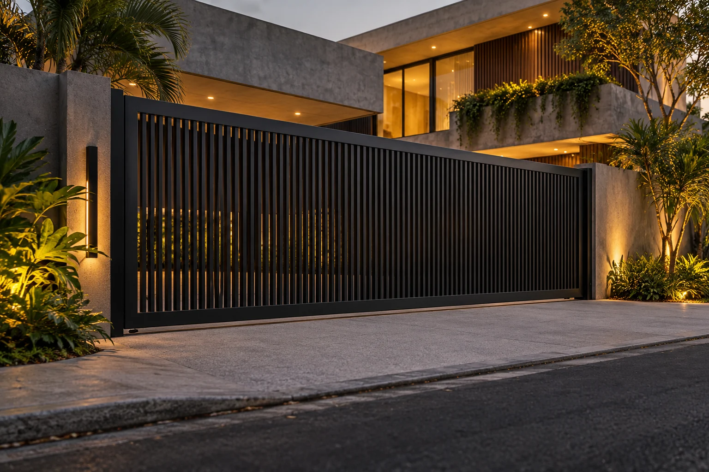
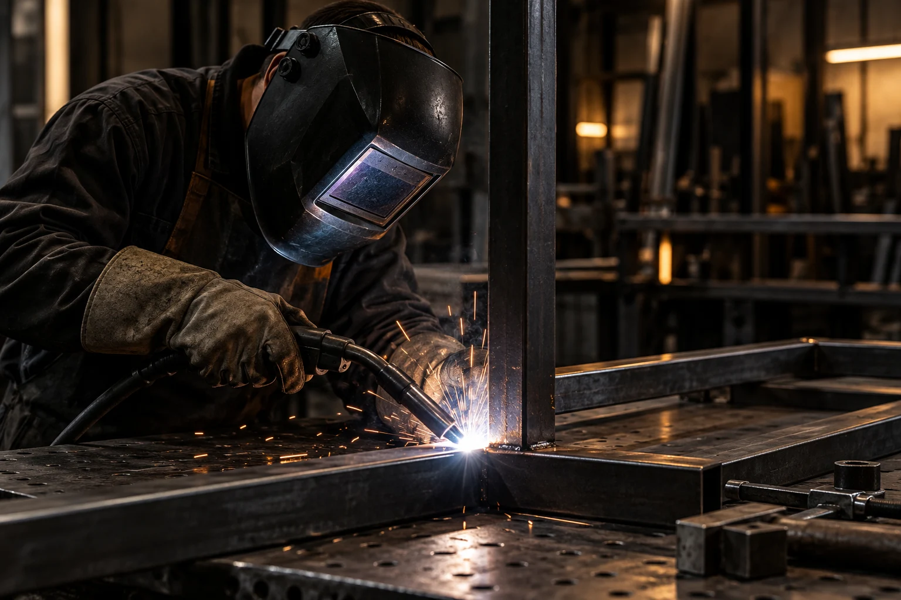
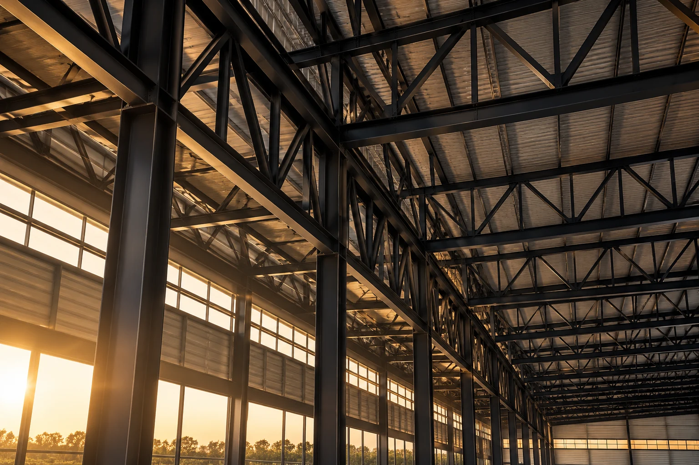

PRECISÃO
O planejamento das medidas é fundamental para um bom resultado.

Conheça uma proposta de apresentação digital para soluções em serralheria, estruturas metálicas e projetos sob medida.

A MATÉRIA ENCONTRA A FORMA.Uma boa solução em metal une resistência, funcionalidade e atenção aos detalhes. De elementos arquitetônicos a estruturas utilitárias, cada projeto exige planejamento e precisão.
Esta é uma visão conceitual de como a serralheria pode se apresentar no ambiente digital. Imagens e conteúdos aguardam validação do responsável.
CONHEÇA A PROPOSTA ↗Categorias ilustrativas para explorar possibilidades.
Os serviços oferecidos precisam ser confirmados.
Linhas que desenham espaços.
Materiais que revelam possibilidades.
Imagens ilustrativas geradas para demonstração. Não representam trabalhos realizados pela empresa.

Projetos em metal podem unir durabilidade,
segurança e estética em uma única solução.
Aspectos importantes da serralheria profissional. Pilares conceituais desta apresentação.
O planejamento das medidas é fundamental para um bom resultado.
A escolha adequada de materiais e técnicas influencia a durabilidade.
Os detalhes finais contribuem para a estética e a funcionalidade.
Escolha suas referências e prepare uma solicitação. Sem estimativas fictícias, com espaço para os detalhes que importam.
Uma proposta de presença digital para a atividade de serralheria associada ao cadastro de Fabio Raimundo dos Reis, em Alfenas, Minas Gerais.
FÁBIO REIS | SERRALHERIA é uma identificação provisória desta demonstração, não um nome fantasia confirmado. A identidade definitiva, os serviços, as fotografias e os contatos deverão ser validados com o responsável.
CONCEITO DESENVOLVIDO PELA BLACK TECHFábio Reis — SerralheriaNome provisório • Alfenas — MG
(35) 99849-7400 ↗WhatsApp a confirmar com o responsável